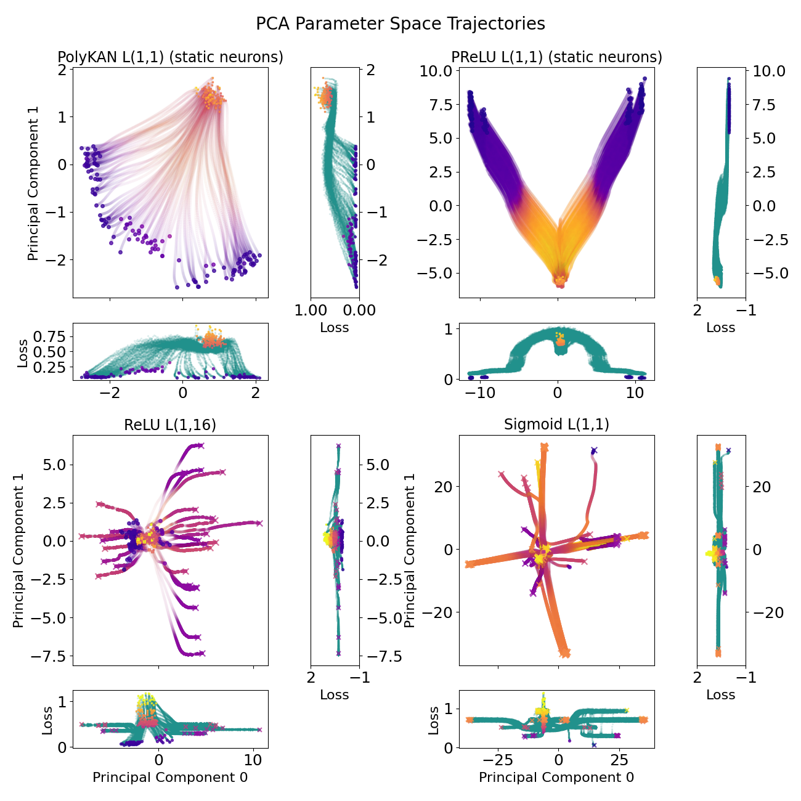

Accepted at Artificial Life 2026 (ALIFE 2026) · Oral
LifeNNgine
It’s Much Easier for Neural Networks to Learn Game of Life Dynamics with the Right Activation Function
The Pocket Universe
Conway’s Game of Life is a tiny universe of cells that live or die by a few simple rules - a piece of toy physics simple enough to hold in your head, yet rich enough to be universally powerful.
Each cell looks at its eight neighbors. A dead cell springs to life with exactly three live neighbors; a live cell survives with two or three. That’s it. Paint your own patterns below and watch them evolve.
Widget A - an interactive, toroidal Game of Life grid. Step, play, randomize, or stamp classic patterns.
The rule, as a function
Strip away the grid and Life’s update becomes a function of the live-neighbor count N - but also of the cell’s current state. The network’s entire job is to learn this shape.
In words: with 2 live neighbors a cell keeps its state, with 3 it becomes alive, and otherwise it becomes dead. The two curves below make the role of the current cell explicit - survival (alive stays alive) and birth (dead becomes alive). The bump is non-monotonic, which is the kind of shape a monotonic function like ReLU fits poorly but a small polynomial fits naturally.
Widget B - the B3/S23 rule as a function of neighbor count, split into birth and survival. Ghost curves hint at why monotonic (ReLU) and linear-quadratic fits behave so differently.
Why it’s hard (ReLU & lottery tickets)
If the rule is so simple, why do standard networks struggle? The shape of the function is part of the story - and so is the inductive bias of the activation. But the whole story is still genuinely open.
One natural suspect is monotonicity. ReLU and its relatives only climb once they turn on, while the Life rule turns off again after N = 3. To represent that with ReLU, a network needs enough width to “fold” the curve back down, and finding a working configuration by gradient descent is like finding a winning lottery ticket. Minimal ReLU networks rarely learn the rule from scratch; they need more parameters or a lucky initialization.
But monotonicity itself is not the deciding factor. PReLU is also monotonic, yet in our ablation the minimal PReLU model learned the rule in every sample when its synaptic weights were held static - learning a strictly monotonic activation function on the way. That rules out “monotone → unlearnable,” and leaves the real question open. It could be about width, about initialization, about the smoothness of gradients in parameter space, or about some as-yet-unnamed commonality between PReLU and PolyKAN. We find the mystery more interesting than any tidy explanation.
Watch it learn, live
The headline result, demonstrated in your browser: a real PolyKAN network learns the Life update rule by gradient descent, side-by-side with a ReLU network that stalls.
The activation-function zoo
Different activations have different geometries - and geometry decides which rules a network can learn. Explore the zoo, then sculpt a PolyKAN polynomial by hand.
Widget C - toggle activations in the zoo above; below, drive f(x) = w₀ + w₁x + w₂x² against the ghosted rule shape. The readout reports whether your curve is monotonic.
Viz 1 - success rate by activation across 128 training runs.
Source: Table 2.
Robustness & results
PolyKAN is not just accurate - it is robust. It learns the rule across initial densities, survives ablation of its weight training, and converges to a diverse, well-behaved region of parameter space.
Viz 2 - success rate vs initial on-density.
Source: Fig 4 (approx.).
Viz 3 - ablation: full / activations-only / weights-only training.
Source: Fig 6 / Table 2.

Viz 4 - parameter-space PCA of training trajectories from the paper (PolyKAN vs PReLU vs sigmoid vs ReLU).
Source: paper Fig 1.
Open questions
We did not set out to write the last word on activation functions for Life-like rules. A few threads we have not pulled - and would love help pulling.
It could be that monotonicity turns out to matter more across a broader swath of Life-like CA than it does for B3/S23 specifically. PolyKAN might pull ahead where PReLU falls short, or the comparison might stay close - we just do not know yet.
There may also be some as-yet-unnamed commonality between PReLU and PolyKAN gradient spaces that would explain why both learn where ReLU stalls. Smoothness is one obvious guess, but the PReLU derivative is discontinuous, so the usual smooth-gradient story does not quite fit either.
If either thread sounds interesting to you - whether you want to broaden the rule family, dig into the geometry of parameter space, or just poke at a counter-intuitive result - we would genuinely like to hear from you. Open an issue or send a message; motivated students especially welcome.